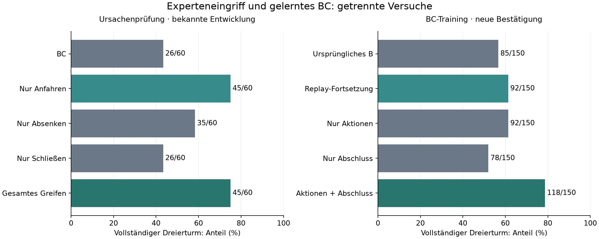
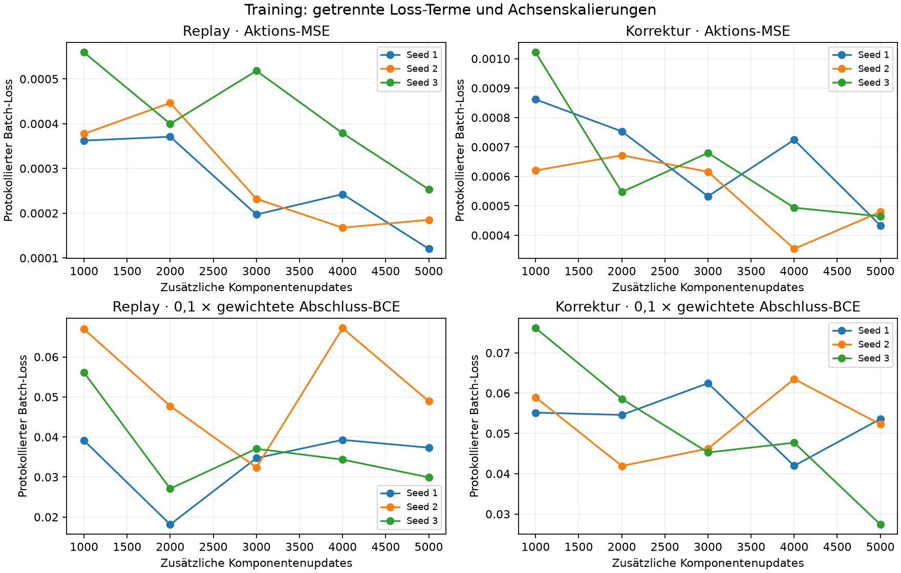
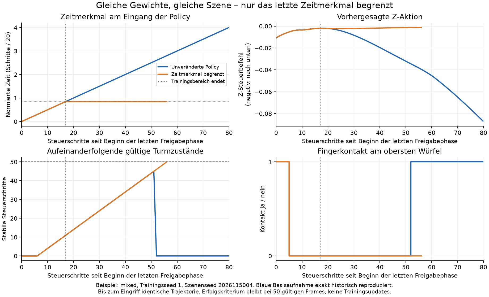
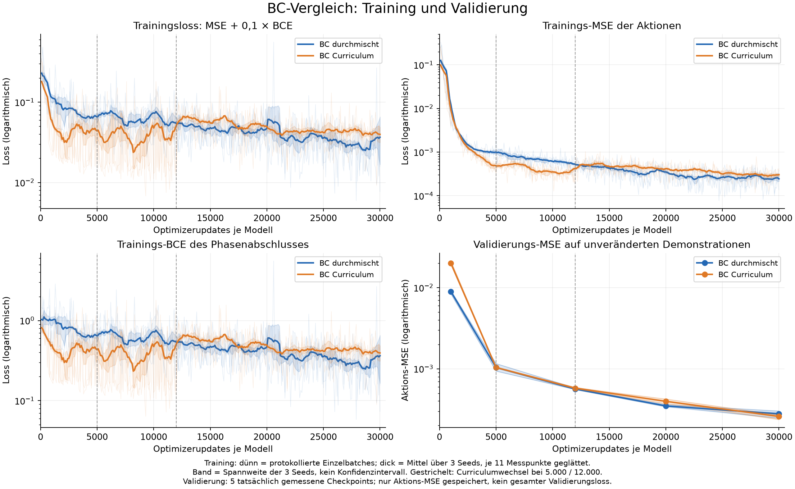
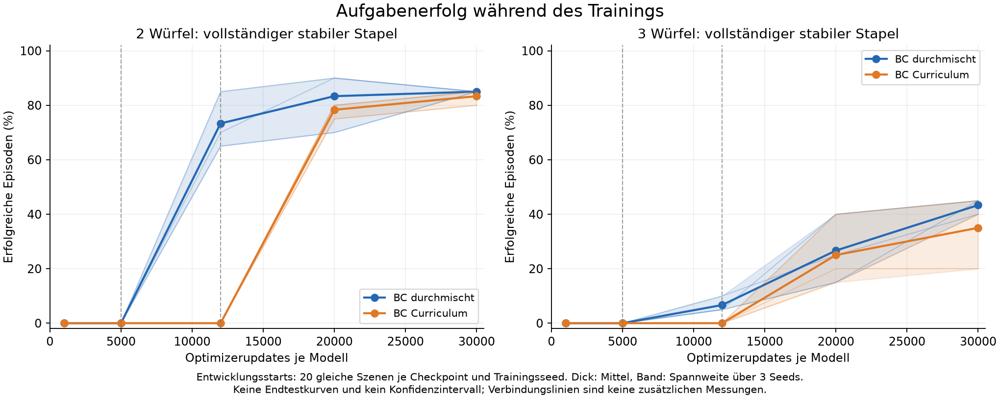

FORSCHUNGSSTAND · 13. NOVEMBER 2026
BC-Korrekturen für
das zweite Anfahren
Gezielte Expertenkorrekturen verbessern den vollständigen Dreierturm-Erfolg auf neuen Bestätigungsszenen. Am wirksamsten ist die gemeinsame Verwendung neu gelernter Aktionen und Phasenabschlüsse.
Simulation · privilegierte Zustände3 Modellseeds · 50 gemeinsame BestätigungsszenenCurriculum-Vorteil nicht belegt
ABGESCHLOSSEN · GEZIELTES BC-TRAINING
Aktionen und Phasenabschluss gemeinsam verbessern
| Ausführung | Erfolge | Anteil |
|---|---|---|
| Ursprüngliches B | 85/150 | 56.7 % |
| Replay-Fortsetzung | 92/150 | 61.3 % |
| Nur Aktionen | 92/150 | 61.3 % |
| Nur Abschluss | 78/150 | 52.0 % |
| Aktionen + Abschluss | 118/150 | 78.7 % |
Während der Auswertung übernimmt kein Experte. Die beiden Korrekturkomponenten wurden getrennt gelernt und werden beim zweiten Anfahren gemeinsam eingesetzt. Nur Aktionen helfen weniger; nur der neue Abschluss verschlechtert zwei Modelle.
150 Modell-/Szenenpaare sind keine 150 unabhängigen Szenen. Die 50 Anfangsszenen werden über drei Modellseeds geteilt. Das bekannte Entwicklungspanel bleibt getrennt: B 26/60, kombiniert 45/60.
Messwerte, gepaarte Veränderungen und Quellen-Hashes ↗ · Vollständige Vorgehens- und Ergebniseinordnung ↗VORGEHEN · VON DER DIAGNOSE ZUM LERNVERSUCH
Den zweiten Anfahrprozess eingrenzen
- 01 / A–B–C
Reihenfolge zeigt keinen konsistenten Zusatznutzen
A 40/28/26, B 48/56/50, C 52/42/46 Erfolge je 100 neue Starts. B übertrifft A in allen Seeds; die X→XY→XYZ-Reihenfolge C übertrifft B nur in einem Seed.
- 02 / PHASEN
Teilfertigkeit und Eingangszustand trennen
220 Diagnoseversuche ohne Training. Exakte Expertenlabels und echte Experten-Präfixe statt Zustands-Teleportation. Travel und Open erreichen je 30/30 isolierte Ziele. Im Gesamtrollout fehlt bei 15/48 zweiten Lift-Starts ein Griff; alle 15 scheitern.
- 03 / EINGRIFF
Expertenhilfe beim zweiten Greifen wirkt
Nur Approach, Grasp-Descend und Close ersetzt; danach wieder B. 26/60 → 45/60 Gesamterfolge, 19 Gewinne ohne Verlust. Noch keine Verbesserung durch Lernen.
- 04 / EINZELPHASEN
Anfahren ist der stärkste Ansatzpunkt
300 Episoden: BC 26/60, nur Anfahren 45/60, nur Absenken 35/60, nur Schließen 26/60, gesamtes Greifen 45/60. Die Eingriffe ersetzen jeweils Aktion und Abschlussregel gemeinsam.
- 05 / BC
Korrekturen aus tatsächlich erreichten Zuständen lernen
Neue, getrennte Trainings-/Validierungsfamilien. Aktions- und Abschlusslernen einzeln und gemeinsam gegen ursprüngliches B und eine Replay-Fortsetzung auswerten. Fester Endpunkt, keine Best-of-Test-Auswahl.

DATEN · MODELL · AUSFÜHRUNG
Was genau trainiert wurde
40 neue Trainings- und zehn Validierungsfamilien werden mit drei B-Ausgangscontrollern ausgeführt. Von 150 Sammelversuchen sind 135 akzeptiert: 108 Training, 27 Validierung. Tatsächlich enthalten sind 36 Trainings- und neun Validierungsfamilien mit 2.069 bzw. 499 Frames. Ganze Anfangsszenen bleiben über alle Controller und Frames in einem Split; 15 nicht erreichte Anfahrphasen werden protokolliert statt ersetzt.
Je Modell vier Komponenten mit je 5.000 Updates: Replay-Aktion, Replay-Abschluss, Korrektur-Aktion und Korrektur-Abschluss. Start aus B-Gewichten samt AdamW-Zustand. Nur die gesamte Phase-0-MLP wird trainiert; Phase 1–6 bleibt bitgleich. Batch 64; Korrekturbatches mischen 32 alte Phase-0-Frames mit 32 neuen Frames. Replay nutzt 64 alte Frames. LR 1e-4; Aktions-MSE bzw. 0,1 × gewichtete Abschluss-BCE.
Die versteckten Gewichte der ursprünglichen MLP beeinflussen Aktion und Abschluss gemeinsam. Getrennte Kopien erlauben deshalb funktional getrennte Ausgaben. Die kombinierte Ausführung nutzt exakt die separat gelernten Kopien und erhält keine weiteren Updates. Es handelt sich um ein zusammengesetztes Diagnosesystem, nicht um eine neue letzte Schicht.
Ein expliziter Sequencer-Kontext aktiviert neue Ausgaben nur bei Platzierung 2, Phase 0, außerhalb des Rückzugs. Erstes Anfahren und Rückzug bleiben bei B. Die Erfolgsdefinition verlangt 50 aufeinanderfolgende strenge stabile Frames ohne Fingerkontakt. Bestätigungsstarts werden nicht zum Training oder zur Auswahl des besten Checkpoints verwendet.
Protokollierte Komponenten-Losswerte
Je ein Trainingsbatch-Loss bei 1.000 bis 5.000 zusätzlichen Updates. Aktions-MSE und skalierte Abschluss-BCE haben getrennte Skalen; dies sind keine geglätteten Epochenmittel oder Validierungskurven.

AKTUELLER ABSCHLUSS · REICHWEITE DER AUSSAGE
Gezielte BC-Verbesserung für das zweite Anfahren
Expertenkorrekturen aus den erreichten Eingangszuständen verbessern in diesem Versuchsaufbau den vollständigen Stapelerfolg, wenn die gelernten Aktionen und der gelernte Abschluss gemeinsam verwendet werden. Das ist eine Verbesserung durch Training auf neuen Bestätigungsstarts im selben Simulator.
Der Befund umfasst getrennte Aktions-/Abschlusskopien, den vorgegebenen Ausführungskontext und privilegierte Zustandsmerkmale. Eine einzelne gemeinsame MLP mit demselben Erfolg, ein Vorteil geordneter Curriculum-Präsentation, beliebige Turmhöhen, autonomes Paarplanen oder reale Hardware sind nicht nachgewiesen. Die Datenabdeckung für Rückzug und langes Open bleibt begrenzt.
Für diesen gezielten Abschluss ist kein weiterer Trainingslauf zwingend. Ein Curriculum-Nachweis würde dieselben Beispiele in gemischter und geordneter Reihenfolge vergleichen. Eine Verdichtung der getrennten Kopien und Übertragung auf andere Aufgaben wären weitere, eigenständige Untersuchungen.
ABGESCHLOSSEN · FRISCHES GEPAARTES PANEL
Zeitkorrektur bestätigt
Erfolgreiche stabile Stapel
Je 100 gleiche frische Starts pro Modell. Zwei Vorgeschichten mit je drei Trainingsseeds.
OriginalZeitmerkmal begrenzt
| Trainingsvorgeschichte | Seed 1 | Seed 2 | Seed 3 |
|---|---|---|---|
| Durchmischt | 44 → 56 | 40 → 42 | 37 → 39 |
| Curriculum | 32 → 60 | 51 → 58 | 50 → 59 |
Bestätigt ist der Effekt der Zeiteingabe auf diese sechs festen 60k-Modelle. Die 100 Szenen ersetzen keine unabhängigen Trainingsreplikate. Die höheren Curriculum-Werte isolieren den Curriculum-Effekt nicht.
Messwerte mit Quellen-Hashes ↗DIAGNOSE · KONKRETE DATENABDECKUNG
17 Schritte gesehen.
50 stabile Frames verlangt.
Das Zeitmerkmal der letzten Freigabe war in den Trainingsdaten nur bis Schritt 17 enthalten. Bei längerer Ausführung entstanden im untersuchten Fall zunehmend nach unten gerichtete Aktionen und erneuter Fingerkontakt.
Die Korrektur begrenzt ausschließlich die Zeiteingabe in Phase 6 der zweiten Platzierung. Physikalische Zeit, Phasenzähler, Modellgewichte und die strenge Erfolgsbedingung bleiben erhalten.
Der ursprüngliche Diagnosefall wurde zunächst in ausgewählten historischen Szenen untersucht. Die darüber gezeigte Bestätigung verwendet andere, frische Szenen.

ABGESCHLOSSEN · A/B/C BEI 30K
A / B / C: Was hilft dem BC?
Standard-BC
Vollständiger Trainingspool ab Beginn. Gleichmäßige Phasenauswahl, dann Frame innerhalb der Phase.
Abgeschlossen · 40 / 28 / 26 je 100Kontroll-BC
Exakt dieselben Batches wie C, aber deren Reihenfolge global durchmischt.
Abgeschlossen · 48 / 56 / 50 je 100Curriculum-BC
Geordnete Beispiele: X-lastig, dann XY, dann der vollständige Bewegungsumfang. Ergebnis: 52 / 42 / 46 je 100.
Abgeschlossen · 52 / 42 / 46 je 100A ↔ B prüft die Datenexposition. B ↔ C isoliert die Reihenfolge. A ↔ C bewertet das gesamte Curriculum.
Identische Anfangsgewichte je Seed, PhaseNet, Loss, AdamW, Batch 64 und 30.000 Updates. Alle drei Varianten erhalten dieselbe korrigierte Zeiteingabe. Die Wiederverwendung von B/C ist vorab auf Konfiguration, Initialisierung und Batch-Multiset geprüft.
Ergebnis: B übertrifft A in allen drei Seeds; C übertrifft B nur in einem Seed. Hauptmaß: vollständiger stabiler Dreierturm auf 100 neuen gepaarten Starts je Modell. Zweierstapel, Aktions-MSE und Phasenabschluss dienen der Diagnose. Der feste letzte Checkpoint wird verwendet; kein Best-of-Test.
WAS DIE VORHERIGEN VERSUCHE ZEIGEN
Eine Untersuchung, mehrere getrennte Fragen
- 01 / 30k
Reihenfolge allein noch ohne Vorteil
Im ursprünglichen B/C-Panel blieb das Curriculum zurück. Die spätere Zeitkorrektur war damals noch nicht berücksichtigt.
- 02 / 60k
Mehr Updates helfen uneinheitlich
Zwei Curriculum-Seeds verbesserten sich, ein weiterer verschlechterte sich. Die durchmischten Modelle verloren in diesem Panel Erfolge.
- 03 / ABSCHLUSS
Einfrieren bringt keinen stabilen Gewinn
Bei fünf von sechs Modellen lag die Dreierturmrate mit fester Abschlussfunktion niedriger. Das einfache Einfrieren erklärt oder löst die Schwäche nicht.
- 04 / ZEIT
Eine Ausführungslücke wird eingegrenzt
Gezielter Eingriff und unabhängiges Panel bestätigen einen Nutzen der begrenzten Zeiteingabe. Kein zusätzlicher Lernlauf war dafür nötig.
Die Versuche haben verschiedene reservierte Szenenpanels. Absolute Erfolgsraten aus unterschiedlichen Panels bilden keine gemeinsame Lernkurve.
Historische Loss- und Entwicklungskurven öffnen
Diese Kurven gehören zum ursprünglichen 30k-B/C-Versuch. Die abgeschlossenen A/B/C-Endergebnisse stehen oben; diese historischen Kurven zeigen weiterhin nur den ursprünglichen B/C-Versuch.

